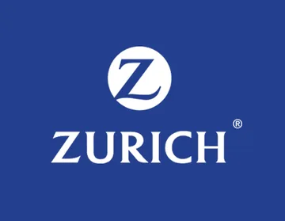

Zurich
- Origen suizo
- En Argentina desde 1964
Aseguradora de origen suizo con más de 150 años de trayectoria a nivel global. En Argentina ofrece seguros generales y de vida para personas, pymes y grandes empresas.
Trabajamos con estas compañías para brindarte una amplia gama de opciones que se adapten a tus necesidades.

Aseguradora de origen suizo con más de 150 años de trayectoria a nivel global. En Argentina ofrece seguros generales y de vida para personas, pymes y grandes empresas.
Aseguradora cooperativa argentina con coberturas en seguros patrimoniales, de vida, retiro y riesgos del trabajo, y un fuerte enfoque en la prevención.
Compañía argentina de origen cooperativo con seguros para personas, vehículos, comercios, consorcios, embarcaciones y empresas, además de vida, retiro, accidentes personales y ART.
Aseguradora argentina de esencia mutualista, con seguros para autos, hogar, vida, agro, comercios, pymes y grandes empresas, y acción social a través de la Fundación San Cristóbal.
Una de las principales aseguradoras del mercado argentino, de enfoque cooperativo, con soluciones para personas y empresas de diversos sectores.
Aseguradora del Grupo Financiero Galicia, con seguros de hogar, automotores, vida, accidentes personales, salud y coberturas para pymes, empresas y el agro.
Aseguradora argentina con seguros de automotores, hogar, vida, accidentes personales, embarcaciones y empresas, con el ramo automotor como su especialidad principal.
Te ayudamos a comparar opciones según lo que necesitás proteger.